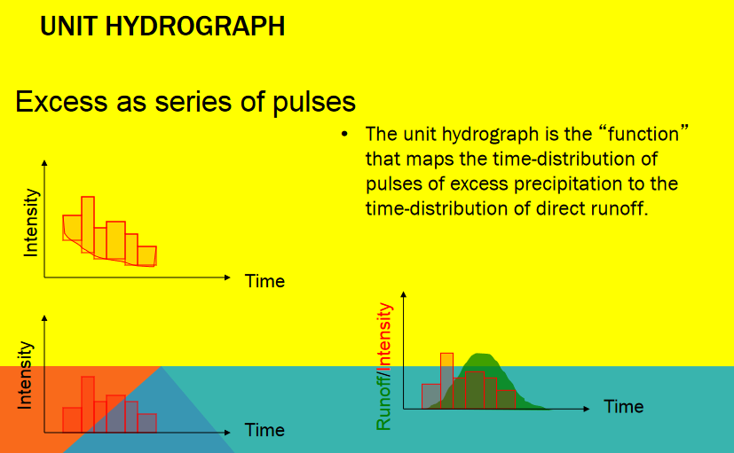
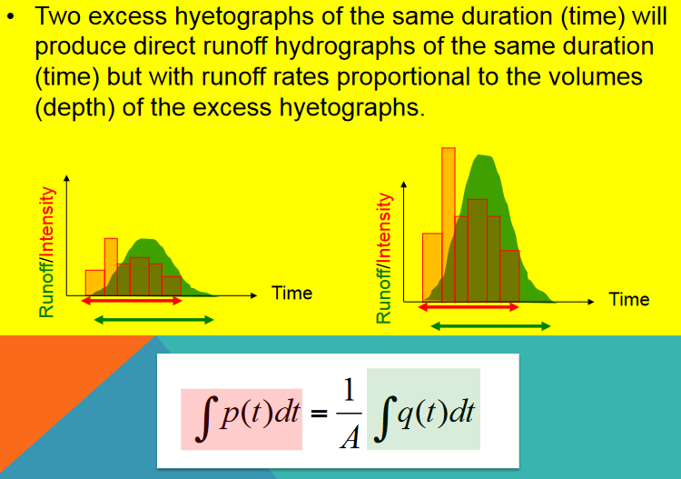
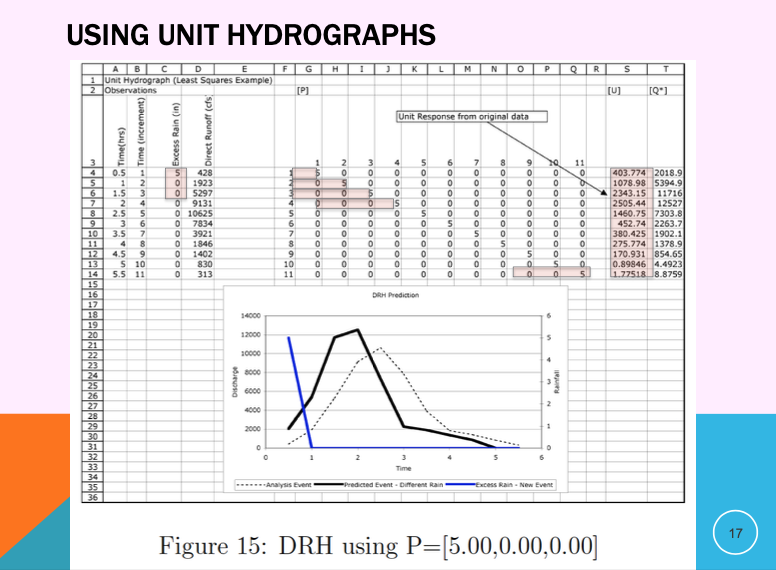

Unit Hydrographs - I (Analysis)#
A hydrograph is a plot (or paired time-discharge values) of discharge versus time for a location (on a stream).

An idealized hydrograph has
Rise portion
Peak portion
Recession portion
Inflection point The hydrograph pictured also has a baseflow component
Flow in absence of a storm
Baseflow Separation#
Baseflow separation is a first step in analysis – several methods
Constant discharge method#
When rising limb starts – declare that value to constant rate during the event, rejoin as recession limb.
All flow above the value is declared storm flow
Constant slope method#
When rising limb starts – draw a segment from that value to the inflection point on the recession limb
All flow above the value is declared storm flow
Hard to implement for multiple peak hydrographs (real hydrographs may exhibit many peaks)
Concave method#
When rising limb starts – draw a segment from that value following the recession curve to a point beneath the peak flow.
Then draw a segment from the point above to the inflection point
All flow above the segments are declared storm flow
Hard to implement for multiple peak hydrographs (real hydrographs exhibit many peaks)
There are a few more ways to accomplish baseflow separation
The master-depletion curve method is outlined in the readings
For many practical cases with multiple peaked hydrographs the constant discharge method is probably the most straightforward to apply (or use continuous simulation techniques – outside scope this course)
What is a unit hydrograph?#
Used to explain the time re-distribution of excess precipitation on a watershed
Represents the response of the watershed at the outlet to a unit depth of EXCESS precipitation
EXCESS implies some kind of loss model is applied to the raw precipitation
Time re-distribution implies some kind of transfer behavior is applied
L. K. Sherman 1932 is credited with seminal publication of the concept
The unit hydrograph is a response function that transforms the distributed input to the outlet, accounting for transit time to get from remote parts of the watershed to the outlet.

Another way to picture it is the stack of pizza boxes model of the watershed
The time basis matters. In the figure below a single input of time length D produces the outlet response shown. The unit hydrograph is the kernel function that makes the transformation.

Unit hydrograph models contain a few common themes, first input hyetograph, then a loss model which are combined to produce the excess precipitation signal
The excess precipitation signal has the same total volume as the direct ruoff

And the unit hydrograph as a transfer function maps the excess hyetograph to the outlet

The storm induced flow is added to any baseflow to produce the total hydrograph.

Unit Hydrograph Assumptions#
Direct runoff duration (time) is same for all uniform-intensity storms of same duration (time)
Two excess hyetographs of the same duration (time) will produce direct runoff hydrographs of the same duration (time) but with runoff rates proportional to the volumes (depth) of the excess hyetographs
The time distribution of direct runoff from a given storm duration is independent of concurrent runoff from prior storms (no memory)



Timing#
Strictly speaking, each unit hydrograph has a particular duration associated with it, D in the diagram
That duration must coincide with the time step size used in discrete aggregation
Thus a D-hour unit hydrograph is a response to a D-hour “pulse” of excess precipitation.
The flow associated with that response is reported every D-hours until there is no further response (\(T_D\) in the diagram)
Each watershed has a characteristic response time, \(T_{lag}\) and \(T_P\) in the diagram. The characteristic time of the watershed is related to physical characteristics of the watershed contributing area, slope, etc. The time step size for aggregation must the same as the duration, and the time-to-peak for the watershed must be an integer multiple of that value.
Note
These requirements are coded into HEC-HMS which will issue warnings as these requirements are violated. As a designer you need to decide whether to ignore the warnings and proceede or adjust inputs and parameters to satisfy the various rules of the signal processing.
Convolution#

How are they built from data (analysis)?#
Will demonstrate several approaches by example (mostly using the same data and different methods)
Back-Substitution#


Observe that if the linear system has full ranked matrix (rows=columns) and non-zero diagonal, one could just solve the resulting linear equation for the unitgraph weights
Probably better than manual back-substitution which is error prone
Many instances the system is over-determined; more equations than unknowns and an optimization technique is usually applied

Least-Squares#
This method is good for over-determined cases, although may produce negative weights - usually these are small in magnitude and late in time, so not a huge issue but do need addressing when they arise.
The least squares approach treats the problem as a regression problem, and fits the weights to the data. A spreadsheet can implement the technique for smallish problems.

What are Unit Hydrographs used for?#
They are useful to predict responses to future storms of correct duration.

A future storm of same duration but different magnitude (similar input sequence)

A future storm of same duration but different magnitude (different input sequence)

A future storm of same duration but different magnitude (different input sequence)

Parametric Unit Hydrographs#
The unit weights can be replaced by a function whose shape is adjusted by one or more parameters, these are called parametric unit hydrographs.


VALUE OF PARAMETRIC UNIT HYDROGRAPHS#
Fewer values to keep track of
Simple extension of time-base
If the parameters can be associated with watershed metrics (Slope, MCL, soil properties, shape, etc.) the resulting model is called a synthetic unit hydrograph
Called synthetic because response can be synthesized from the metrics rather than from analyzing observations (which we may not have in cases of practical interest)

Time-Base Extension#
Extending the time base of a UH is needed to accomodate storms of much different length than used in the analysis. Extension for parametric hydrographs is fairly easy, just extend the matrix as needed. For classically obtained weights, the S-curve technique as as good as any. Fortunately most software has parametric UH choices built-in, so this is a non-issue these days unless you are using historical UHs and need to bring them into the 21st century.


Summary concepts#
Unit hydrographs map the excess precipitation signal to the outlet
Base-flow separation isolates the total discharge from the storm-induced discharge
Loss models are implicit; the unit hydrograph maps excess to the outlet
Back-substitution (linear equation) and Least-Squares analysis method illustrated.
Parametric UH described
Hydrograph Analysis
Measured rainfall and runoff to infer the transfer function. Implies: Have DATA.
Hydrograph Synthesis
Physical properties of watershed used to postulate the transfer function. Actual measurements not required – Produces an ESTIMATE
References#
cite pages of textbook
Spreadsheets#
Listed below are spreadsheets that implement simple UH examples. They are Excel (circa 2009) spreadsheets, that work in current Excel, LibreOffice, and Numbers environments